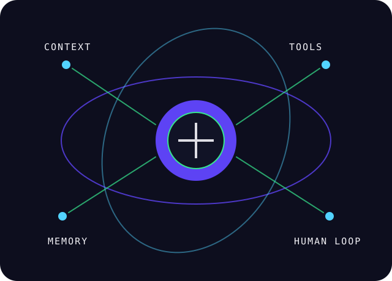

2024 — 2026
CHEF DE PROJET DIGITAL
TérangaDev
Pilotage de projets web et mobiles, specs, Kanban et coordination des équipes techniques et créatives.
Produit · Agile · Leadershipportfolio / interface personnelle
J’automatise vos process. Je conçois des systèmes qui font gagner du temps, réduisent les coûts opérationnels et transforment l’expertise en résultats.

const user = {
name: "El Hadji Ahmadou CHERIF DIOUF",
role: "Ingénieur Full-Stack & Formateur",
focus: [ "Digitalisation", "IA", "Pédagogie" ],
impact: "6h → 35min"
};
pas une vitrine. une conversation.
Chaque réponse du portfolio renvoie vers une expérience, un projet ou une compétence concrète.
De l’intégration de services chez Integratop IT au pilotage de produits digitaux, chaque étape ajoute une couche : méthode, sécurité, automatisation, transmission.
Pilotage de projets web et mobiles, specs, Kanban et coordination des équipes techniques et créatives.
Produit · Agile · LeadershipLogiciel d’états financiers avec FastAPI, React et Tauri. Supervision du SI, sécurité des accès et sauvegardes.
FastAPI · React · Tauri · LinuxSuivi des KPI, reporting, coordination des mises en production et sécurisation des opérations.
KPI · Reporting · ConformitéInstallation, paramétrage et tests d’une solution chez le client, avec traitement des anomalies et stabilisation de l’environnement.
Intégration · Tests · Supportmon laboratoire
Un écosystème autonome pour transformer une intention en système : contexte, outils, mémoire, contrôle humain et livraison.
Voir les preuves →JavaScript · React · Laravel · PHP · Node.js · Express · FastAPI · Python · APIs Web
SQL · MySQL · PostgreSQL · MongoDB · UML · Git · GitHub · Linux · Docker
RAG · prompt engineering · skills · agents · automatisation · n8n · OpenRouter
Frontend · backend · méthode · code review · pédagogie par le projet · data literacy
Application commerciale de gestion interne pour stocks, RH et finance.
Laravel · React · MySQLAutomatisation du cycle de vie client : contrats, prospects et alertes d’échéances.
CRM · Automatisation · ProcessServeur sécurisé avec SSO, VPN, automatisations et bases vectorielles.
Linux · Agents · RAGUne plateforme de vente de produits locaux et une application de suivi des habitudes.
Mobile · Produit · ImpactPont HTTP local pour piloter un agent IA Chrome avec validation humaine.
TypeScript · Ollama · IARépertoire de 80 compétences avancées pour développer, créer et transmettre.
Claude · Codex · Agents